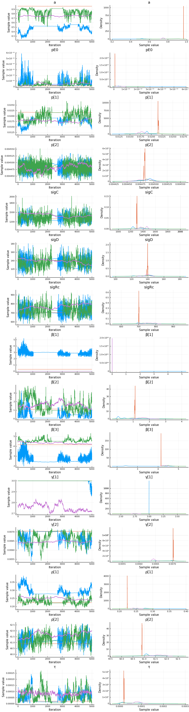
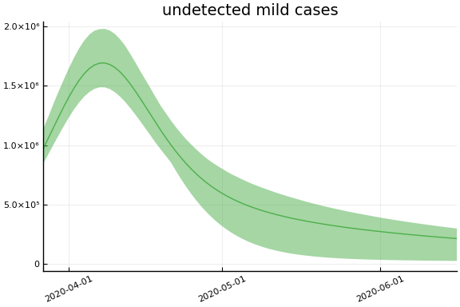
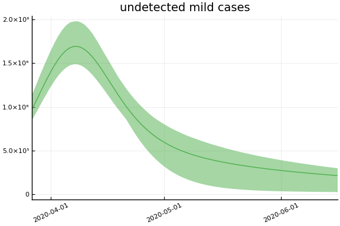
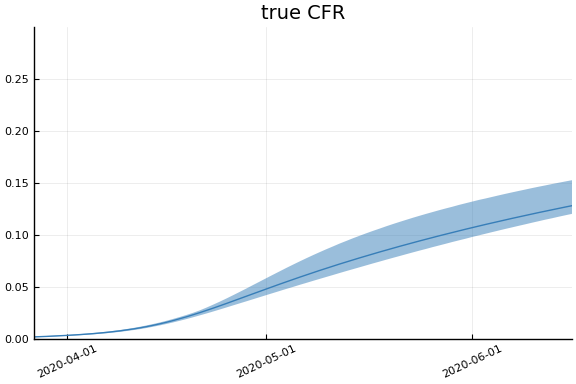
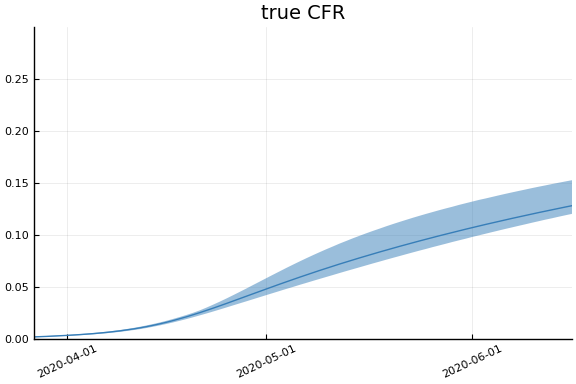

This work is licensed under a Creative Commons Attribution-ShareAlike 4.0 International License
using CovidSEIR, Plots, DataFrames, JLD2, StatsPlots, Dates
Plots.pyplot()
jmddir = normpath(joinpath(dirname(Base.find_package("CovidSEIR")),"..","docs","jmd"))
covdf = covidjhudata();
United States¶
us = CountryData(covdf, "US")
CovidSEIR.CountryData{Float64,Int64}(3.2716743e8, [1, 2, 3, 4, 5, 6, 7, 8,
9, 10 … 69, 70, 71, 72, 73, 74, 75, 76, 77, 78], [0.0, 0.0, 0.0, 0.0, 0.0
, 0.0, 0.0, 0.0, 0.0, 0.0 … 2978.0, 3873.0, 4757.0, 5926.0, 7087.0, 8407.
0, 9619.0, 10783.0, 12722.0, 14695.0], [0.0, 0.0, 0.0, 0.0, 0.0, 0.0, 0.0,
0.0, 0.0, 0.0 … 5644.0, 7024.0, 8474.0, 9001.0, 9707.0, 14652.0, 17448.0,
19581.0, 21763.0, 23559.0], [1.0, 1.0, 2.0, 2.0, 5.0, 5.0, 5.0, 5.0, 5.0,
7.0 … 153209.0, 177275.0, 200141.0, 228835.0, 258792.0, 285794.0, 310005.
0, 336303.0, 361738.0, 390798.0])
using Turing
mdl = CovidSEIR.TimeVarying.countrymodel(us)
cc = Turing.psample(mdl, NUTS(0.65), 5000, 4)
import JLD2
JLD2.@save "$jmddir/us_tv_$(Dates.today()).jld2" cc
JLD2.@load "$jmddir/us_tv_2020-04-09.jld2" cc;
Estimates¶
plot(cc)

describe(cc)
2-element Array{MCMCChains.ChainDataFrame,1}
Summary Statistics
parameters mean std naive_se mcse ess r_hat
────────── ───────── ────────── ──────── ───────── ─────── ──────
a 0.2677 0.2347 0.0019 0.0179 64.2570 1.2986
pE0 0.0000 0.0000 0.0000 0.0000 92.7828 1.1082
p[1] 0.0031 0.0084 0.0001 0.0007 64.2570 1.9974
p[2] 0.0330 0.1042 0.0008 0.0082 64.2570 1.3537
sigC 5836.1776 18850.7405 149.0282 1491.4526 64.2570 1.3202
sigD 91.7836 19.1570 0.1514 1.4549 64.2570 2.2207
sigRc 639.0054 63.7597 0.5041 4.2474 68.8767 1.3410
β[1] 0.6106 0.4985 0.0039 0.0347 64.2570 1.1899
β[2] 0.8140 0.6693 0.0053 0.0441 92.5536 1.0825
β[3] 0.7265 0.4735 0.0037 0.0328 73.8654 1.1344
γ[1] 0.0321 0.0421 0.0003 0.0032 64.2570 1.0696
γ[2] 0.0146 0.0443 0.0003 0.0035 64.2570 1.4583
ρ[1] 0.6454 0.1641 0.0013 0.0126 64.2570 2.2423
ρ[2] 59.2163 2.5749 0.0204 0.1971 64.2570 2.2997
τ 0.0094 0.0271 0.0002 0.0021 64.2570 2.0329
Quantiles
parameters 2.5% 25.0% 50.0% 75.0% 97.5%
────────── ───────── ───────── ───────── ───────── ──────────
a 0.0746 0.1057 0.1802 0.3254 0.9654
pE0 0.0000 0.0000 0.0000 0.0000 0.0000
p[1] 0.0001 0.0001 0.0001 0.0004 0.0258
p[2] 0.0045 0.0054 0.0067 0.0093 0.4796
sigC 1056.1344 1187.9289 1311.0349 1618.1653 96286.1349
sigD 53.3228 83.9691 96.3625 106.4339 118.4114
sigRc 495.7261 600.6894 645.1196 683.9092 751.8316
β[1] 0.0431 0.2379 0.4684 0.8644 2.0278
β[2] 0.0466 0.3036 0.6155 1.1934 2.4611
β[3] 0.1430 0.3609 0.6055 0.9700 1.9573
γ[1] 0.0036 0.0135 0.0196 0.0306 0.1578
γ[2] 0.0001 0.0009 0.0023 0.0051 0.1959
ρ[1] 0.4410 0.5331 0.5976 0.6875 0.9749
ρ[2] 55.8897 57.5529 58.3709 60.7289 66.2746
τ 0.0000 0.0000 0.0000 0.0002 0.1029
Fit¶
sdf = simtrajectories(cc, us, 1:200)
f = plotvars(sdf, us)
plot(f.fit, ylim=(0, maximum(us.active)*1.3))

Implications¶
for fig in f.trajectories
display(plot(fig))
end

 



 
